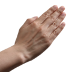
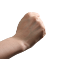
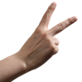

Score:
0
Balance
function CustomPlayer() { /** Computes a move in the game. Returns a index for either paper, rock or scissors. E.g 0,1 or 2. The aiMoves parameter is an array sent by the game engine which tells the player the history of the ai moves */ this.makeMove = function(aiMoves) { return Math.floor((Math.random()*3)); }; }
Implement